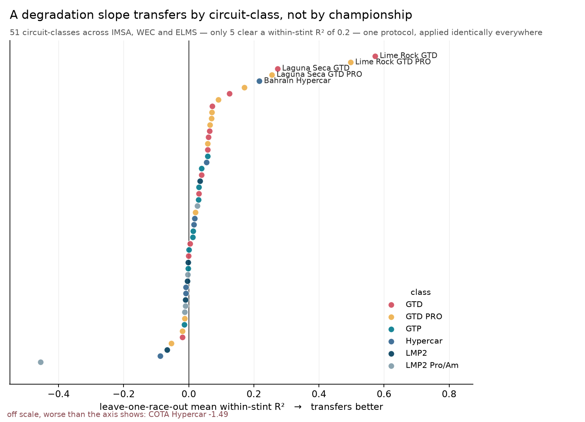
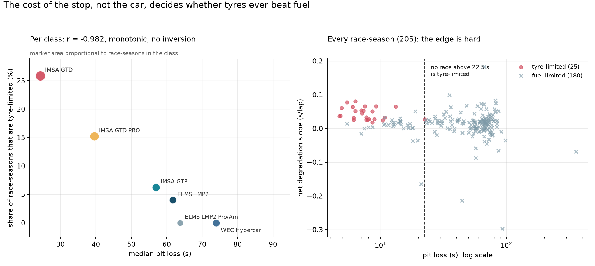
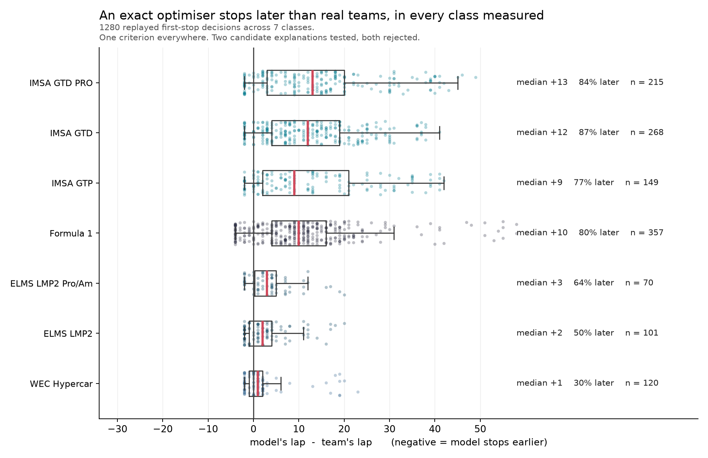
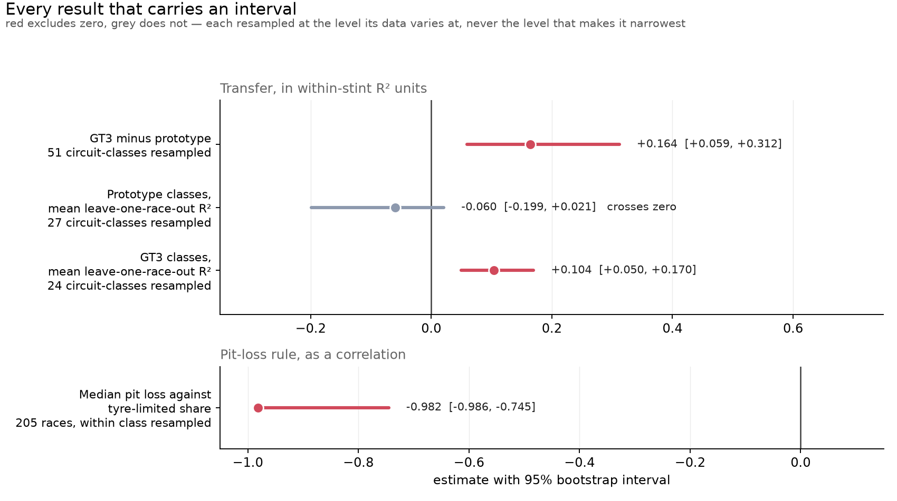

One protocol across four championships and seven car classes. 1,280 real pit-stop decisions replayed against it. Two of the three results are negative, and the third is measured but unexplained.
Fit a degradation slope on every season of a circuit but one, predict the held-out season, score the within-stint residual. Do it the same way everywhere.

GT3 classes transfer measurably better than prototypes: difference +0.164, 95% CI [+0.059, +0.312], permutation p = 0.0009. Resampled at the circuit-class, never the fold — folds inside a class share a fitted slope.
The obvious explanation is performance-balanced machinery. It is ruled out: ELMS LMP2 is near-specification — one chassis, one engine, no Balance of Performance — and fails exactly as the balanced fields do. The instability is not the hardware.
An exact dynamic program plans every endurance race under a hard fuel constraint and reports whether the tyre-optimal plan needs more stops than the tank forces.

Monotonic across all six classes with no inversion. The interval is bootstrapped over races, recomputing each class summary inside every replicate — bootstrapping six fixed championships would produce an interval over a variation that does not exist.
Every real first stop is replayed. The model is asked five laps early, given the state as it was, and its recommendation compared to the lap the team chose.

Two explanations were proposed here, and both were tested here.
No track position, so the engine cannot pay for an undercut. Re-running all 357 F1 decisions through a cover-aware Stackelberg engine moves the recommendation away from the real stop. Rejected.
Slopes biased toward durability. Against an independent source separating tyre wear from fuel burn by a different method, the paired difference is negligible — an error that size moves a stop by several race distances, not ten laps. Not detected.
What is left to try is the question itself. The model is offered every remaining lap; a pit wall is choosing among a handful inside a strategy already committed to, under a tyre allocation the engine does not see. Testing that means changing the audit, not the model — and it is the first of the three questions this project would most like answered.
Three baselines, scored on the same decisions, from the same artifacts, on the same metric. Written to win if they could — a straw man would prove nothing.
| Championship | Exact optimiser | B1 fixed interval | B2 threshold | B3 fuel deadline |
|---|---|---|---|---|
| Formula 1 | 10 | 11 | 7 | — |
| IMSA | 12 | 8 | 29 | 14 |
| WEC | 2 | 2 | 39 | 1 |
| ELMS | 2 | 3 | 45 | 4 |
Median absolute lap error against the real stop. B1 uses no fitted quantity at all — and it is the one that wins in IMSA. B3 is undefined in Formula 1, which has not refuelled since 2010, and is reported as undefined rather than substituted with the race end.
No fabricated data, anywhere. Every quantity is measured from published timing or absent. Where a source lacks something, that is a stated limitation and the affected layer is not fitted.
Two estimators were withdrawn. A track-evolution correction was validated on synthetic races and failed twice on real fields. It is described rather than omitted, and the omitted variable is reported as diagnosed and unfixed.
The paper contains no numbers. Every quantity in the manuscript is a macro generated from the committed artifacts, so it cannot drift from the data — regenerate and it is correct, or CI fails.
446 tests, including a file whose only job is to recompute each published headline from its artifact and assert the result appears in the document that publishes it.
